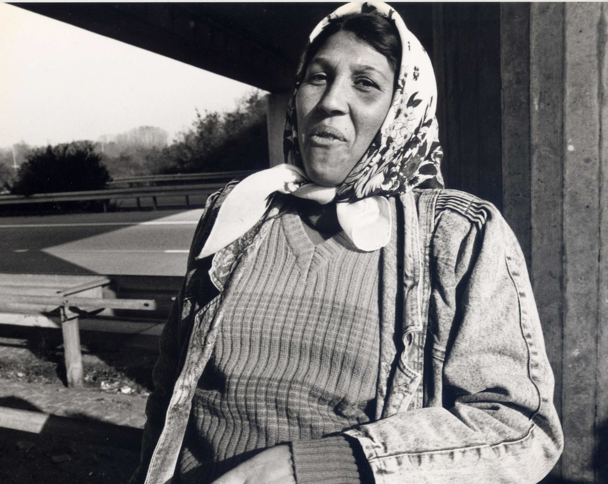

Press
All the press material can be downloaded as a zip archive, including high-quality versions of the pictures and the booklet.
Press pictures

All for the good of the world and Nosovice
Opening Film
Das ist unser Haus
40 Years Rauch-Haus
(photo credit: Jutta Matthess, Umbruch Filmarchiv)

Yellow Cake
Energy Block

Cowboys in India
India Block

Gelem Gelem
Roma Block

Nosotros del Bauen
Labour Conditions Block
List of guests
Teresa Adamska, Centrum Zrownoważonego Rozwoju
Heba Ahmed von der Agyptischen Frauenunion, Deutschland (tbc).
Anne Allex
Francesca Araiza Andrade (Regisseurin)
Ali Atassi (Regisseur)
Urs Bauerochse alias Trudi-Padma Knusprig und Andreas Wulf, kulturschaffende Polittunte
Claudia Becker (Flusser Archiv)
Andrea Behrendt (Regisseurin)
Maaike Broos (Regisseurin)
Andrea Gadaleta Caldarola, InsuTv
Simon Chambers und N.N. (Informationsdienst ‚halla bol!‘)
Esperanza Chamorro (Historikerin)
Yamileth Chavarria (Protagonistin „Das Dschungel Radio“)
Miloud el Cherif (Karawane Thuringen)
Rokia Diarra (Federation des Associations de Migrants)
Alassane Dicko (Assoziation der Abgeschobenen Malis)/Hamada Dicko (Unterstützungskomitee der Assoziation der Abgeschobenen Malis)
Emmely und das Komitee „Solidaritat mit Emmely“
Thomas Irmer
Susanne Jager (Regisseurin),
Marc Herbst (Journal of Aesthetics and Protest)
Dr. Krini Kafiris (Aktivistin und Wissenschaftlerin zum Thema Medien, Gender, Wirtschaftpolitik)
Christoff Kendarian (Journalist)
Andre Kloer (Regisseur)
Marko D. Knudsen (Rom und Cinti Union Hamburg)
Karin Kroell (Aktivistin von bildwechsel)
Magda Malinowska
Irja Martens (Regisseurin)
Jordane Maurs (Regisseurin)
Kovo N’sonde
Armin Petras, Intendant Maxim Gorki Theater
Eliza Petkova (Regisseurin)
Guido Piccoli (Journalist, Schriftsteller)
Paolo Podrescu (Xlterrestrials)
Dr. Podinski and special guests
Andreas Postrach (Intag e.V. und Freundeskreis)
Theodor Rathgeber (Adivasi-Koordination e.V.)
Ringo (Hausbesetzer/Aktivist)
David Rojas-Kienzle (Journalist)
Anne Roth (Annalist)
Guliz Sağlam (Regisseurin)
Susanne Schultz, Gen-ethisches Netzwerk.
Andrea Searle, Tommaso Taurisano, Kalifa Soumahoro (ex-rosarno worker)
Kalifa Soumahoro aus Collettivo Rosarno, Italien
Teresa Święćkowska
Ula Tabari (Regisseurin)
Teleimmagini, InsuTv, Andrea Gadaleta Caldarola, Denise Garcia Bergt
Samanta Yepez (Regisseurin),
Mbolo Yufanji (The Voice Berlin),
Mr. Vojkovsky (Aktivist)
Patrick Watkins (Regisseur)
Winfried Wolf (Chefredakteur Lunapark21), tbc
Warschauer Mieterverein
Melissa Castagnetto, Karolin Meunier, Sandra Schafer (Aktivistinnen)
derzeitige Hausbewohner_innen Rauchhaus
Press contact
For press inquiries, please contact:
Lieke Alina Rahn
lieke@globale-filmfestival.org
0177-1962307